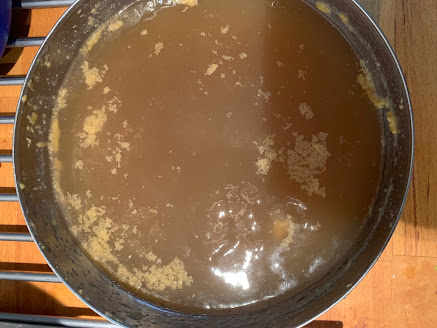
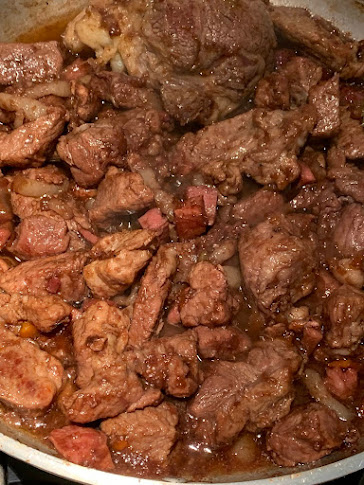
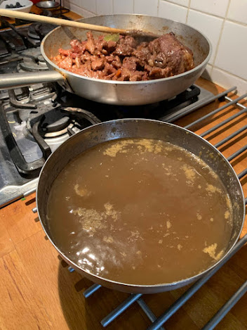
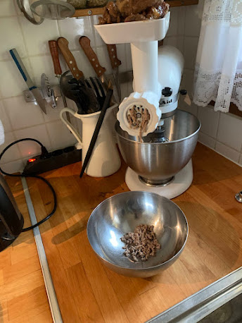
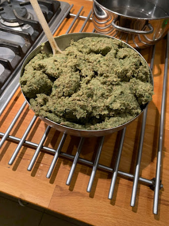
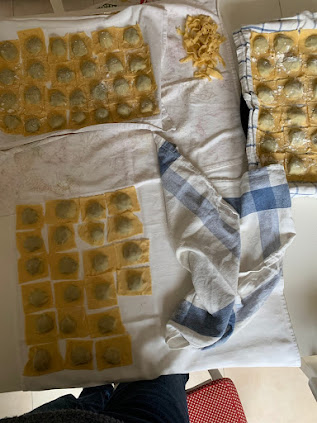
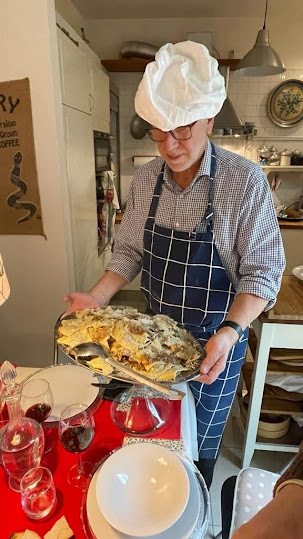

Agnolotti al sugo d'arrosto
Foto








Introduzione e contesto
Questa ricetta rispecchia un poco la mia famiglia. Mio padre era di Alessandria e mia madre era nata a Torino. Queste due città hanno una tradizione di arrosto leggermente diversa: arrosto a Torino, brasato ad Alessandria. Mia mamma col tempo perfezionò una ricetta un po' a cavallo fra questi due mondi.
Per la realizzazione ho in parte ripreso le ricette del ristorante Le Tre Galline di Torino e della Trattoria Losanna di Alessandria, pubblicate in Ricette di Osterie d'Italia di Slow Food Editore.
Ingredienti
| Ingrediente | Quantità | Unità | Note |
|---|---|---|---|
| polpa di manzo | 500 | g | per il brodo |
| ossa di bovino | 300 | g | per il brodo |
| doppione o biancostato | 300 | g | per il brodo |
| gallina pulita | 1/2 | per il brodo | |
| sedano | 1 | costa | per il brodo |
| carota | 1 | per il brodo | |
| cipolla | 1 | per il brodo | |
| pomodoro rosso | 1 | per il brodo | |
| acqua fredda | 3 | l | per il brodo |
| sale | per il brodo | ||
| alloro | 1 | foglia | per il brodo |
| bacche di ginepro | qualche, per il brodo | ||
| chiodi di garofano | 3 | per il brodo | |
| prezzemolo | per il brodo | ||
| pepe in grani | per il brodo | ||
| reale di vitello | 1 | kg | per il ripieno e il sugo |
| polpa di suino | 2 | hg | per il ripieno e il sugo |
| lardo non aromatizzato | 2 | hg | per il ripieno e il sugo |
| prosciutto cotto | 1 | hg | per il ripieno e il sugo |
| riso bollito nel latte | 2 | hg | per il ripieno e il sugo |
| spinaci | 3 | hg | per il ripieno e il sugo |
| cipolle dorate | 2 | per il ripieno e il sugo | |
| carota | 1 | per il ripieno e il sugo | |
| sedano | 1 | gambo | per il ripieno e il sugo |
| rosmarino | 1 | rametto | per il ripieno e il sugo |
| alloro | 3 | foglie | per il ripieno e il sugo |
| cannella | 1 | pezzetto | per il ripieno e il sugo |
| chiodi di garofano | qualche, per il ripieno e il sugo | ||
| salvia | per il ripieno e il sugo | ||
| noce moscata | un pizzico, per il ripieno e il sugo | ||
| Barbera | di qualche anno, per il ripieno e il sugo | ||
| uova | 6 | per il ripieno e il sugo | |
| parmigiano reggiano | 2 | hg | per il ripieno e il sugo |
| burro | per il ripieno e il sugo e servizio | ||
| olio EVO | per il ripieno e il sugo | ||
| sale | per il ripieno e il sugo | ||
| pepe | per il ripieno e il sugo | ||
| uova | 8 | per la pasta | |
| farina di frumento tipo 00 | 1 | kg | per la pasta |
| sale | per la pasta | ||
| olio EVO | per la pasta |
Preparazione
- Preparare il brodo. Lavare la carne e le ossa sotto acqua corrente. Mondare le verdure; tagliare carota e sedano a tocchetti e la cipolla a metà. Raccogliere tutto in una capiente casseruola con il pomodoro intero, aggiungere il doppione, la mezza gallina, le ossa e la polpa, coprire con circa 3 litri di acqua fredda e portare a bollore.
- Cuocere e filtrare il brodo. Schiumare con un mestolo forato, abbassare la fiamma e fare sobbollire dolcemente per circa 3 ore, semi-coperto. Filtrare il brodo con un colino a maglie fitte; per un brodo più limpido filtrare una seconda volta con una mussola. Salare quando è ancora caldo.
- Preparare il riso e il fondo del ripieno. Cuocere a parte il riso nel latte: perché si sciolga bene serve più di un'ora di cottura, secondo il tipo di riso. Affettare finemente cipolle, carota e sedano e soffriggerli a fuoco vivo con aglio ed erbe in olio e burro.
- Rosolare le carni. Tagliare le carni a pezzi di circa 2 cm e unirle al soffritto. Rosolarle a lungo, in modo che si sigillino bene. Aggiungere il vino e farlo sfumare, anche più di una volta. Unire cannella e chiodi di garofano.
- Completare la cottura del ripieno. Bollire a parte gli spinaci e saltarli poi con il burro. Continuare la cottura delle carni aggiungendo brodo poco alla volta e rivoltandole spesso, in modo da ottenere un arrosto di spezzatino, cotto sempre con poco sugo. Quando le carni sono tenere al cucchiaio di legno, aggiungere solo un poco più di brodo e spegnere.
- Tritare e legare il ripieno. Passare al tritacarne le carni ben scolate con gli spinaci e la noce moscata. Aggiungere poi uova, parmigiano e un poco di riso cotto nel latte per legare; aggiustare di sale, pepe e noce moscata.
- Preparare il sugo d'arrosto. Togliere momentaneamente il fondo di cottura dalla pentola, spargere un cucchiaio di farina nella pentola per catturare i gusti residui, quindi aggiungere lentamente il fondo passato al colino, fino all'ultima goccia, e altro brodo. La salsa deve restare liquida. Cuocere per altri 30 minuti circa, quindi spegnere prima che si addensi troppo. Lasciare riposare in frigorifero per almeno 1 giorno; prima dell'uso riscaldarlo e, se serve, allungarlo con poca acqua. Volendo si può sgrassare a freddo.
- Preparare la pasta. Impastare farina, uova, una presa di sale ed eventualmente un bicchiere d'acqua e un poco di olio. Tirare la sfoglia il più sottile possibile e tagliarla in strisce larghe circa 5 cm.
- Formare gli agnolotti. Disporre palline di ripieno sulla pasta, ripiegare la sfoglia su se stessa e ritagliare gli agnolotti su tre lati con la rotella dentata. Lasciarli riposare in frigorifero, anche per un giorno, su strofinacci infarinati che assorbano l'umidità, coprendoli con altri strofinacci.
- Cuocere e servire. Cuocere gli agnolotti in abbondante acqua salata per 5 minuti. Disporli a strati sovrapposti in un piatto da portata ben caldo, distribuendo su ogni strato abbondante sugo, un poco di burro e parmigiano. Lasciare riposare qualche minuto prima di servire. Accompagnare con la stessa Barbera già utilizzata.
Note e osservazioni
- Il testo conserva l'impianto originale della ricetta, comprese la digressione familiare e le osservazioni d'uso sul sugo e sul riposo degli agnolotti.
- Le quantità sono state separate dagli ingredienti senza eliminare informazioni presenti nel testo.